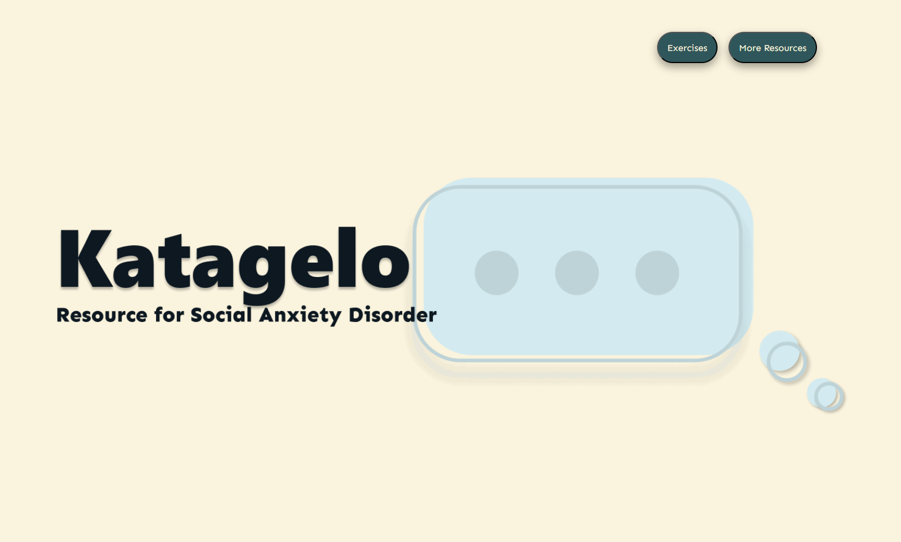

Katagelo
Project Explanation
For my Senior Project/Thesis, I created an online resource for Social Anxiety Disorder.
Katagelo is a one-stop, modern, online resource for social anxiety disorder. Katagelo not only provides information on what social anxiety is, but also has interactive online exercises for accessible support.
Katagelo includes an informational website and interactive exercises to help users work through their social anxiety.
Katagelo is a one-stop, modern, online resource for social anxiety disorder. Katagelo not only provides information on what social anxiety is, but also has interactive online exercises for accessible support.
Katagelo includes an informational website and interactive exercises to help users work through their social anxiety.
Skills
☐ Coded website from scratch using HTML/CSS/JS
☐ Exercises made with Twine (Harlowe) and HTML/CSS
☐ Used Figma for creating website animations and to draft website design and copy
☐ Completed research on mental health resources and Cognitive Behavorial Therapy techniques for Exercise
☐ Multiple rounds of User testing on the Exercises
☐ Exercises made with Twine (Harlowe) and HTML/CSS
☐ Used Figma for creating website animations and to draft website design and copy
☐ Completed research on mental health resources and Cognitive Behavorial Therapy techniques for Exercise
☐ Multiple rounds of User testing on the Exercises
Live Project Links
The Website
The Katagelo website is meant to be a host for the exercises - but also to showcase my web design and HTML/CSS/JS skills. The Katagelo website introduces users to what Social Anxiety Disorder is, including sections like "What It's Like" or "Safety Behaviors." Only compatible on desktop currently, the website has a hybrid scroll (scrolls both horizontally and vertically, but the user only needs to scroll down) and little animations to make the website fun and informative.
The Exercises
The exercise is made using a text-based, game-making platform called Twine. Although it's not supposed to be treated as a game, I believe Twine was the perfect platform to create these exercises as it allowed me to create different paths and the users can interact.
The [5] categories of anxious thinking (as I've found through research) is how this game is organized. Depending on the category the user believes their anxious thinking follows, there are a series of questions/prompts that adheres to that category and allows the users to work through their thoughts in a somewhat personalized way.
Since this exercise is not actually responsive (the computer can not comprehend and respond to what the user inputs), the categories were how I worked around this technical limiation.
Since this exercise is not actually responsive (the computer can not comprehend and respond to what the user inputs), the categories were how I worked around this technical limiation.
The Process
As a part of the Senior Project class, we were responsible for documenting our progress each week.
View the documentation on Notion - shows the whole project process in detail.
View the documentation on Notion - shows the whole project process in detail.

Final Presentation
It is required to present our Senior Project in a science-fair styled showcase called the IDM Showcase. On one monitor, I showed the informational website to introduce social anxiety. On the other monitor, I had the video demo of the exercise to help explain the project. Additionally, I printed out a QR code for people to try the live version of the exercise themselves if they wanted to.
I pitched my project sooo many times over the 4 hours, as well as answered questions of viewers who challenged my work. ("Who are your competitors? Why this project? Is the exercise actually responsive? How about when people put the wrong answers?")
I pitched my project sooo many times over the 4 hours, as well as answered questions of viewers who challenged my work. ("Who are your competitors? Why this project? Is the exercise actually responsive? How about when people put the wrong answers?")
Publication
Check out the page for my project on the official IDM website.
View my LinkedIn post about my project (I talk about my personal thoughts and future plans for the project)
View my LinkedIn post about my project (I talk about my personal thoughts and future plans for the project)